nablur existe para que dejes de luchar contra tu navegador y empieces a usarlo. Rápido, seguro y sin estorbos.
Cada función existe porque resuelve algo real. Nada sobra.
Filtro integrado de rastreadores y anuncios. Tres niveles: básico, medio y estricto.
Organiza, colapsa y colorea tus pestañas. Trabaja con múltiples proyectos sin perderte.
Cambia entre DuckDuckGo, Bing, Google y Ecosia con un solo clic.
Navegación sin rastro. Las pestañas privadas se borran automáticamente al cerrarlas.
Modo claro y oscuro con color de acento ajustable. La interfaz se adapta a ti.
Construido en Rust con WebView2. Arranque rápido, consumo mínimo de memoria.
Decisiones técnicas que hacen la diferencia.
El resultado de hacer las cosas con intención.
Tiempo de arranque
Dependencias innecesarias
Código abierto
Descarga nablur y descubre lo que se siente un navegador que no te estorba.
Descargar nablur